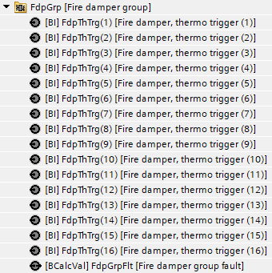
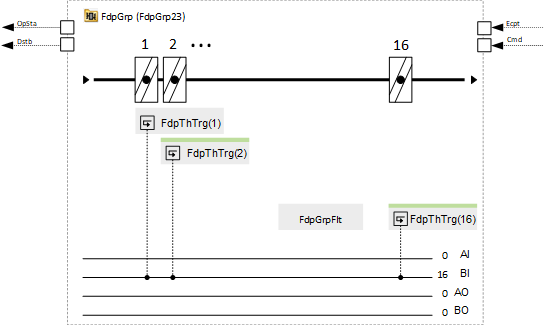
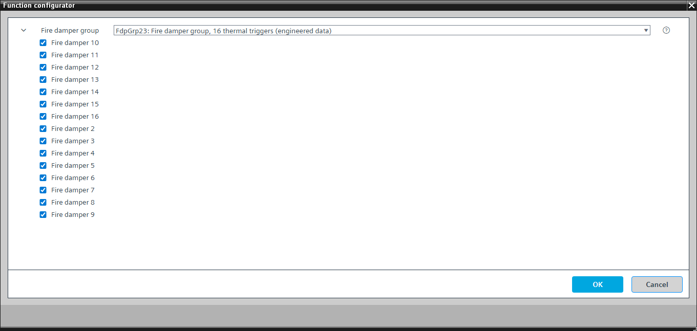

[FdpGrp23] Fire damper group, 16 thermal triggers
Program block, name / node subtype: [FdpGrp23] Fire damper group, 16 thermal triggers
Library hierarchy: Ventilation and air conditioning equipment
Family: Fdp
Project tree | Diagram |
|---|---|
 |  |
Configurator


Program blocks are stored in the library without I/Os. Use the auto-create and auto-connect functions to create I/Os and/or to connect them to the interface blocks, e.g., R_A, CMD_B. Alternatively, take the I/Os from the folder containing the predefined I/Os in the library and/or from the plant and connect them to the interface blocks.
Function
Controls a fire damper group.
There are up to 16 fire dampers, each with a single binary input (thermal trigger).
Each thermal trigger can be configured as either a branch duct fire damper or a main duct fire damper. When a main duct fire damper closes, the disturbance output activates, shutting down the air handling unit and generating a "Fire damper group fault" alarm. A setting determines the number of branch duct fire dampers that must close to activate the disturbance output and generate a "Fire damper group fault" alarm (the default setting is 1).
Optional functions
This program block has the following optional functions:
Option: Fire damper 2...Fire damper 16
Monitors a fire damper with thermal trigger.
Mandatory elements
Name | Description | Type | Alarm / Notification class | Trend / Type | |
|---|---|---|---|---|---|
FdpGrpFlt | Fire damper group fault | BCalcVal: Binary calculated value | Yes, 4 | No | |
FdpThTrg(1) | Fire damper, thermo trigger (1) | BI: Binary input | Yes, 5 | No | |
Optional elements
Name | Description | Type | Alarm / Notification class | Trend / Type | |
|---|---|---|---|---|---|
FdpThTrg(2) | Fire damper, thermo trigger (2) | BI: Binary input | Yes, 5 | No | |
FdpThTrg(3) | Fire damper, thermo trigger (3) | BI: Binary input | Yes, 5 | No | |
FdpThTrg(4) | Fire damper, thermo trigger (4) | BI: Binary input | Yes, 5 | No | |
FdpThTrg(5) | Fire damper, thermo trigger (5) | BI: Binary input | Yes, 5 | No | |
FdpThTrg(6) | Fire damper, thermo trigger (6) | BI: Binary input | Yes, 5 | No | |
FdpThTrg(7) | Fire damper, thermo trigger (7) | BI: Binary input | Yes, 5 | No | |
FdpThTrg(8) | Fire damper, thermo trigger (8) | BI: Binary input | Yes, 5 | No | |
FdpThTrg(9) | Fire damper, thermo trigger (9) | BI: Binary input | Yes, 5 | No | |
FdpThTrg(10) | Fire damper, thermo trigger (10) | BI: Binary input | Yes, 5 | No | |
FdpThTrg(11) | Fire damper, thermo trigger (11) | BI: Binary input | Yes, 5 | No | |
FdpThTrg(12) | Fire damper, thermo trigger (12) | BI: Binary input | Yes, 5 | No | |
FdpThTrg(13) | Fire damper, thermo trigger (13) | BI: Binary input | Yes, 5 | No | |
FdpThTrg(14) | Fire damper, thermo trigger (14) | BI: Binary input | Yes, 5 | No | |
FdpThTrg(15) | Fire damper, thermo trigger (15) | BI: Binary input | Yes, 5 | No | |
FdpThTrg(16) | Fire damper, thermo trigger (16) | BI: Binary input | Yes, 5 | No | |